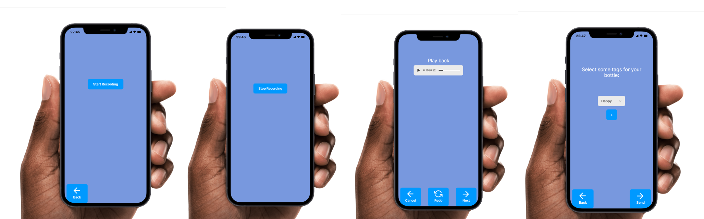
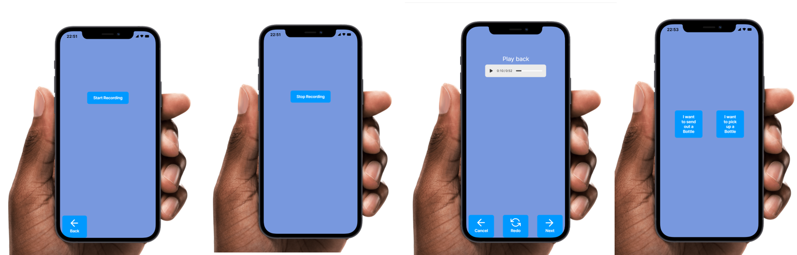
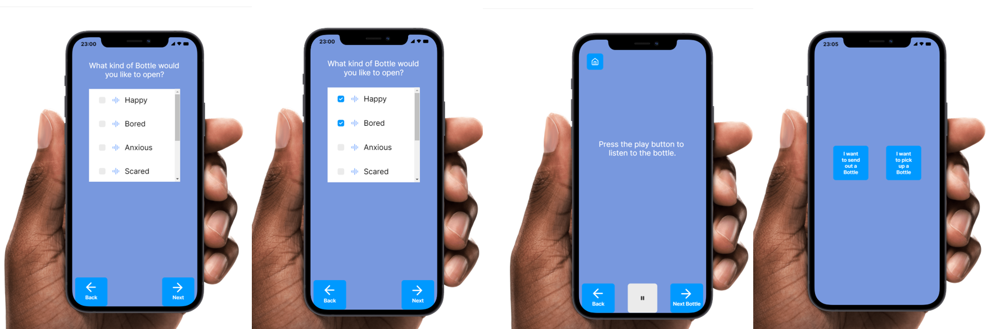
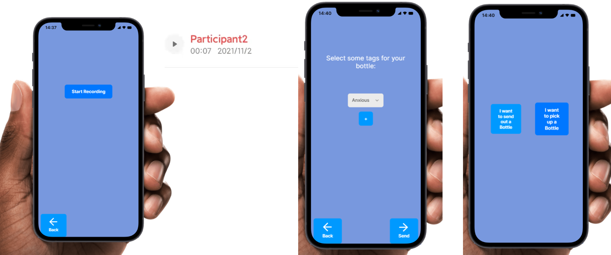
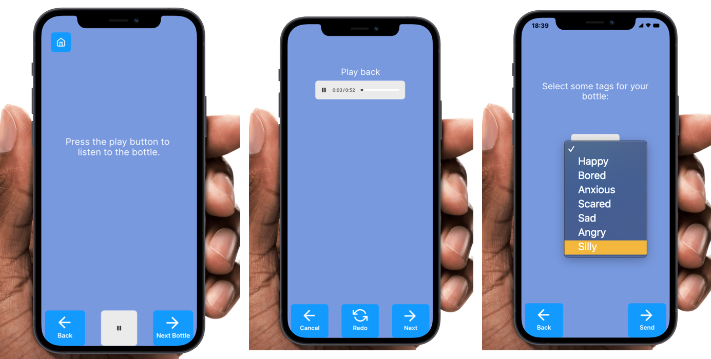

1. Testing
Our group invited 3 participants to join the testing, each corresponding to one type of user population: social image junkie, connection searcher, and disconnected enthusiast. Following the usability test plan, 3 observant(3 of our group members) conducted the test.
Participant test process
The screenshots and video recordings are as follow:
Participant 1: Social Image Junkie
Task 1:Send out a message
Task 2:Begin to send out a message (a Bottle) but discard it before sending it out
task 3:Find a message (a Bottle) that fits your mood and listen to it. Then return to the home screen.
Participant 2: Connection Searcher
Participant 3: Disconnected Enthusiast
Data collection sheet
Participant 1: Social Image Junkie
Participant 2: Connection Searcher
Participant 3: Disconnected Enthusiast
2. Results and Analysis
2.1 Pre-test questionnaire graph
Conclusion
- Frequency: The user population are using social media every day, and posting stuff on social media at least once a month
- Brand of social media: 100% of people use social media which include image communication
- Feeling of popular social media: average score 3.33
2.2 Data collection sheet graph
2.3 Post-test questionnaire graph
Conclusion
- The appearance of the system: rearrange UI and resize fonts
Improvement: include more functions to make the better user experience
Shining point: voice social makes people feel comfortable, prompt random messages
2.4 Usability Evaluation
Usability Testing
Heuristic Evaluation
2.5 Usability issues, justification, and importance
Overview
The overall design of this prototype is constant and straightforward. 83% of the tasks are all completed by the evaluator on their own without help from the observers. However, a number of concerns were still raised based on the observation and the data we collected during the test.
- 1. Due to the limitation of the prototype, all three of the evaluators had a hard time when they tried to add a tag for their bottle and 2 of the evaluators got confused when they tapped the recording button and nothing happened instead of going to the stop recording screen. These concerns could be fixed in the further implementation of the system.
- 2. More vital functions could be added to the system to improve the experience of the users. One of the evaluators pointed out that the system lacks the function that could listen to the old bottles that the user sent before. Another evaluator pointed out that if she wanted to collect her favorite bottle she could not do it due to the lack of functions.
- 3. Half of the usability goals were achieved and the two failed goals are closely related to the main purpose of the App which is to make people less alone and feel heard. Maybe the UI could be improved, try to add some more color to make the user feel more involved.
- 4. Some of the buttons are confusing based on the observation. One of the evaluators commented that the “next” button in the posting screen is really confusing since she thought the “next” button will bring her to the next page instead of posting the bottle. Another evaluator pointed out the “cancel” button did not work the way he thought since the “cancel” button was supposed to discard the bottle instead of bringing him back to the front page. Also, the word “cancel” is misleading.
3. Test Plan Critique
The usability goals for this system are
- Ease-of-use
- Feeling heard
- Feeling that their thoughts are accurately represented
- Feeling less alone with their issues
1. Did the test cases address the usability goals of the system?
- Most of the tests are more about using the system correctly, which matches the first usability goal--easy to use most. Benchmarks like “add a tag to a recorded bottle” and “listen to a bottle” are all observing how well users are doing those tasks.
- Feeling heard level is asked in the post-test questionnaire. However, the rest of the usability goals are less emphasized in the designed test procedure. To improve this, tasks like asking the user’s feelings or asking the user to respond to the recording he/she heard could be added to the task list. More detailed questions could also be added to the questionnaire.
- For the “Feeling that their thoughts are accurately represented”, there are two tasks: “re-record a bottle” and “listen to the bottle before sharing”. These two tasks could make sure if the users express their thoughts accurately represented in this bottle.
- There are no related test cases addressing the “Feeling less alone with their issue”, however, they covered this in the post questionnaire. The question related to this is:” To what degree did you feel empathetic towards others when using the system”. This usability goal is quite important, the best way is to ask more questions related to their feelings and emotional changes before and after using this system.
2. What improvements were made to the test plan to better suit the design goals?
This includes the rationale for any additional exercises you carried out, or modifications made to the originally proposed test plan, and the assessment of the quality of the test plan you were provided in terms of how well it fits with the usability goals of the design team.
Pre-test questionnaire
- 1. Since the group is developing a new social platform, it’s better to find a suitable niche among the existing social platforms, and the pre-test questions could be more specific on what are the limitations of the current social platforms. A question could be added after Q3 on what’s your favorite platform and why, or what platform you dislike most and why.
- 2. In the proposal the group mentioned their intention to develop this platform is to alleviate problems like body anxiety and peer pressure, so it’s better to know how severe this problem is among the intended users, questions like “do you feel a sense of pressure when you see the post of other people, on what extend does it affect your life?” could be added.
- 3. Users share their recorded voices on the platform, it could be better to add questions consulting how people are comfortable with sharing their voices with others.
- 4. This app heavily relies on sharing thoughts on verbal messages so it is worthy to point out how much will the users feel satisfied when they hear or be heard. So questions like “how satisfied are you when you hear other people's thoughts?” and “how satisfied are you when you could be heard by someone else?”
Data collection sheet
The data collection sheet is well designed and comprehensive but in order to test all the functions that are provided in the system to reach the usability goal some entries could be added or modified in the data collection sheet.
- 1. One of the entries that could be modified is the “listen to a bottle” since this only tests the case that there is only one bottle, what will the evaluator react when they need to listen to multiple bottles is not being tested. Thus it could be changed to “Listen to all the bottles”. Also one of my evaluators found some bugs when he tried to listen to all the bottles while pressing the next button and found out that the screen would just keep looping. Thus, by modifying this entry one could find out some potential bugs.
- 2. “deselecting a tag” could also be added to the data collection sheet. Since we not only want to see if the system could add a tag but it is also important to deselect a tag.
Post-test questionnaire
- 1. To meet the usability goals, it’s better to include questions asking users’ opinions on whether they feel that their thoughts are accurately represented and feel less alone with their issues.
- 2. Some questions like “what did you like about the system” are too general for users to answer. Some detailed questions asking the layout of the UI could be put before those general questions.
- 3. Pay more attention to the wording of the questions.
- 4. The question “What did you dislike about the system?” shared the same problem as described in the second point. This question could be changed to “Are there any improvement suggestions you could give to the developer (ie: UI, functions)”
- 5. The question ”Please comment on the appearance of the system.” could be improved by setting a scope of the appearance of the system since different screens should have different appearances based on their functions. So the question could be split into several smaller questions each focusing on a scope such as” Please comment on the appearance of the front page ”, “Please comment on the appearance of the send out bottle screen”.
Heuristic questionnaire
The heuristic that lists in the usability evaluation is detailed and well explained but some improvement could still be made.
- 1. The “visibility of the system status” could be added into the list of the heuristics since this is a social app, it will be nice to let the user see the feedback of their activities such as knowing their bottle has been successfully sent. In the heuristic evaluation form the question” how clear could you see the status of the system ” could be added.
- 2. The question” You find the design scattered, cluttered, and/or distracting when you interact with the system.” does not quite cover the idea of this heuristic ” Aesthetic and minimalist design ” since it does not ask the evaluator the UI, functions are all essentials. So the question could be separated into two questions: “Do you think all the elements in the system are essentials?” and “Do you find some of the elements are distracting when you interact with the system? If so please describe in the additional comments.”
User Manual
- 1. User manual could include some images to give user better illustration
- 2. User manual could be divided into subtopics like interface and function
- 3. It is better to have a brief introduction to tell users what this system/ App is about, so they can use their past experience to help them understand the system easily.
- 4. User manual can add a contact so if users have any questions, they can contact the development team easily.
- The user manuals are hard to read, users really need time to understand all the terms and break down long complex sentences. Too many operations are explained together: To listen…, To change…, To return… are all explained in the “How to pick up a bottle?” section.
Consent form
We found this group does not provide any consent form for the evaluators. It is important to include that to allow the user to know how the data will be used.
3. Does the test plan adequately address the design goals of the system?
Overall, the test plan effectively fulfills the design goals of the system. Most of the design tasks have been tested inside the test plan such as sending out a bottle and receiving a bottle. However, some functionalities are not fully achieved. First, the recording function is not implemented in the prototype. Then, the tag function is not fully implemented, users cannot add or delete tags before posting the bottle, and each bottle does not include tags. These two functionalities are vital, since in order to achieve the design goals, users need to be able to use the system in the first place. Also, the test plan only includes the situation that the user listens to one bottle and then returns to the main screen instead of covering the situation that the user will listen to multiple bottles and then return to the main page.
4. Design Critique
Our group think this prototype implements a good design but will be better if the following features are added.
- 1. Add another screen after sending the recording, something like “Your bottle has been sent” to give positive feedback to the users. User groups like social image junkies and connection searchers/may pay more attention to whether their bottles are being sent successfully.
- 2. Add a “return home” button also in the recording section to remain consistent with the picking up bottle section UI.
- 3. User should be able to re-listen what he/she sent before. For connection searchers, he/she may pay more attention to the effect of the bottle being sent, and get worried when he/she regrets sending that message some days later or wants to re-listen and ensure he/she didn’t send something wrong.
- 4. Users could adapt to the software faster if the recording UI is designed like the UI in smartphones. Especially for the disconnected enthusiasts, this could attract them to use the platform more often.
- 5. The play button could be placed right below the text following “Fitt’s law”.
- 6. The logic and UI of the “Cancel” button are misleading in the sent-out bottle screen since the user thinks this button has a back arrow on it and it will bring back to the previous page instead of the front page of the prototype. In order to clear the confusion maybe we could change the name of the cancel button to discard and remove the arrow.
- 7. The “back” button in the listen bottle section cannot take the user back to the previous listened bottle instead of bringing them back to the chosen tag screen which is misleading since if the user accidentally presses the next button and they want to come back to listen to the previous bottle again they could not do it. Maybe we could make the back button able to bring the user back to the previous bottle and make another button that brings the user back to the tag chosen screen.
- 8. More tags could be added, current options for the tags are all about emotions, maybe the user wants to share other contents instead of just about emotion, maybe gossip about the celebrity. So to improve this issue, the developer could think of some more appropriate tags.
This App does not provide any draft section for users to store their bottles that they don’t want to send at this moment. A draft section could be added so users could store their bottles temporarily and send them later.
- 9. This App does not provide a way to delete a tag in the posting bottle screen. It is really important since this will restrict the user to delete an unwanted tag and violate the heuristic. So it is necessary to add a way to delete a tag.
- 10. It might be better to use words on the button instead of “+” symbols. A “+” (plus symbol) represents many meanings, it could be: increasing value, adding stuff, or addition in the calculation. If the system wants users to add a tag, the button can be ”Add Tag” or “Add”. So users know what it means when looking at the “Add Tag” button.
- 11. It could be better if the user interfaces color changes with the tag which the user selected. For example, if users choose to listen to the happy voice message, the UI color changes to a warm orange, so that it can give users a better user experience.
- 12. When a voice message lacks tags, It’s better to have a brief text description to tell people what the voice message is talking about. If users choose a happy tag and listen to the happy message content, it’s unrealistic for users to listen to thousands and thousands of messages without filtering content. Also if each message is 30 mins long or more, users may lose patience if they can’t find content that interests them, because messages cost too much time.
- 13. There are no functionalities for saving voice messages and removing listened messages. It’s important for users to collect messages which touch their hearts, or messages which mean a lot to them. And users do not want to listen to repeated bottles every time they open the app.